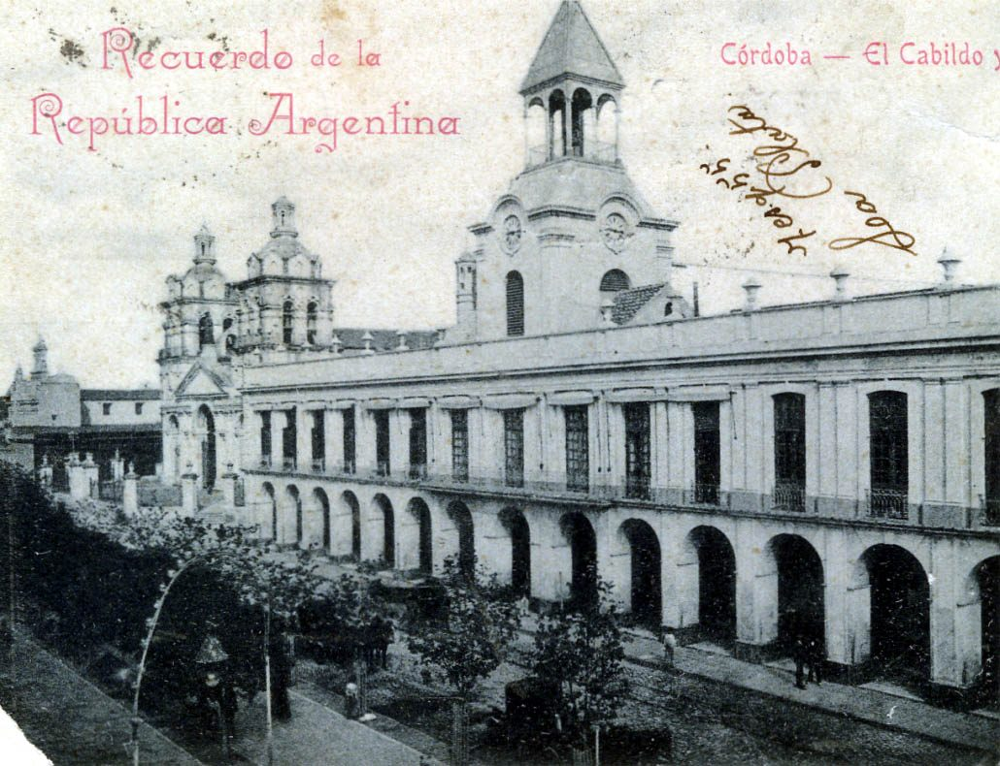
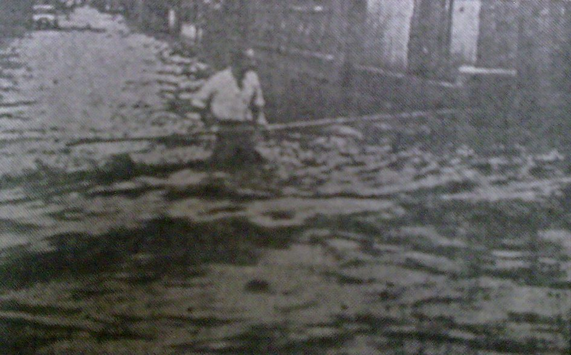
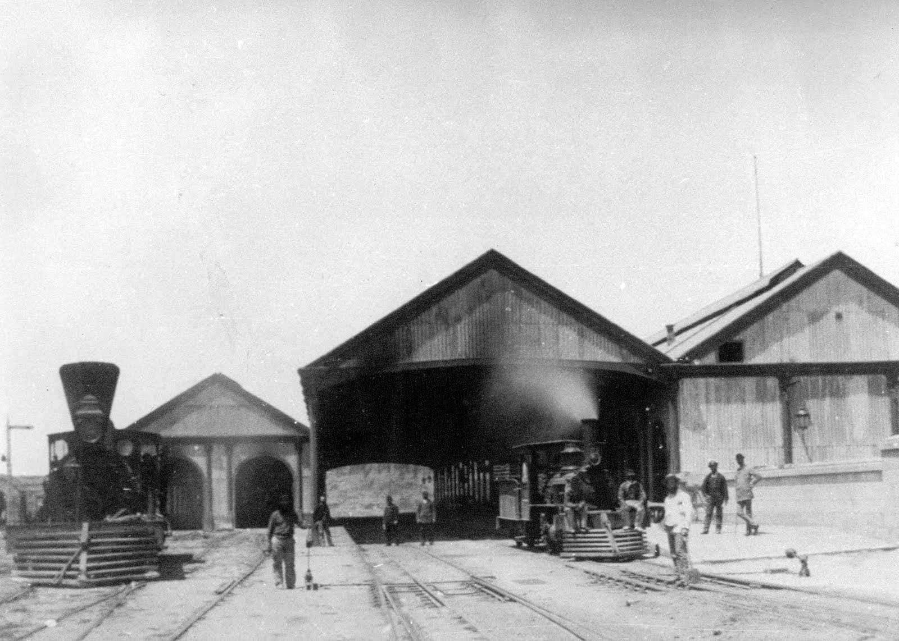
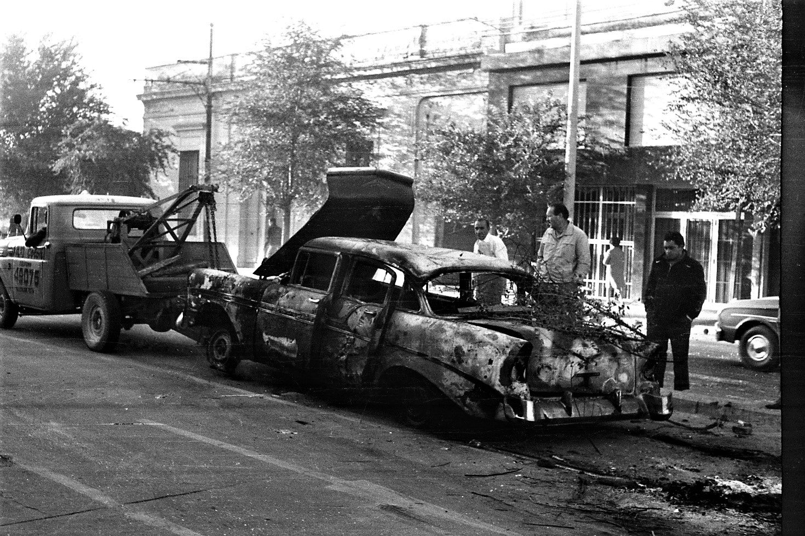

Кордоба: учёный город, который дважды перевернул страну
Кордоба · 11 мест
Кордобу основали 6 июля 1573 года, на реке Суквия, далеко от моря и от главных дорог империи. Принято рассказывать, что Херонимо Луис де Кабрера заложил её вопреки указанию вице-короля строить севернее, и в городе эту историю любят: она объясняет характер. Через четыре года нарисовали первую решётку — семьдесят кварталов.
Настоящую судьбу городу дали иезуиты. Они пришли в 1599-м и сделали Кордобу штабом огромной провинции, от юга Бразилии до Чили. В 1613 году здесь появился колледж, который университет считает своим началом, и провинциальный городок стал «Учёной» Кордобой — La Docta. Этот блеск держался на эстансиях вокруг города и на чужом труде: в 1778 году почти треть горожан были рабами.
В 1767 году король выслал иезуитов, а в 1810-м Кордоба стала оплотом тех, кто не хотел независимости от Испании. Развернула город к новому времени железная дорога. Она пришла в 1870-м, и уже через год здесь прошла Национальная выставка. Потом приехали итальянцы и испанцы, а город впервые вышел за колониальную решётку — на юг, в аристократическую Нуэва-Кордобу.
XX век сделал Кордобу индустриальной. С 1927 года здесь строили самолёты, в 1947-м поднялся в воздух реактивный Pulqui I, а в 1956-м с конвейера нового завода IKA сошёл первый «Джип». Так рядом с университетом вырос рабочий класс. Два раза эти две Кордобы перевернули страну: в 1918 году студенческая Реформа, которую подхватил весь континент, и в 1969-м Кордобасо — восстание рабочих и студентов против военной диктатуры.
Потом были новая диктатура, тайная тюрьма в самом центре города и закрытые заводы девяностых. Экскурсия идёт по этим слоям: колониальный центр, ручей, который веками решал, куда расти городу, окраина обозов и первых рабочих домов, дворцы экспортных денег, вокзал — и квартал, где в 1969 году студенты строили баррикады.
Колониальный центр
Три квартала вокруг главной площади вмещают всю колониальную Кордобу: власть, церковь, женский монастырь, иезуитов и университет. Здесь же, в узком проходе между собором и Кабильдо, в 1970-е годы работала тайная тюрьма — и это соседство само по себе многое объясняет о городе.
Ручей Ла-Каньяда был границей колониального города. За ним, на низком берегу, который постоянно заливало, выросла окраина обозов, глиняных ранчо и первых рабочих домов — нынешний Гуэмес. Почти всё, что видно в этом районе, объясняется соседством с водой.
К северо-западу от центра, вдоль реки, лежат два квартала, где история XX века Кордобы видна лучше всего: студенческий Клиникас вокруг университетской больницы и рабочий Альберди с пивоварней и стадионом. В 1918 и 1969 годах именно здесь студенты и рабочие оказывались по одну сторону баррикады.
Одно здание по очереди служило каждой власти — а под галереей до сих пор камеры.
Пятнадцать одинаковых арок на главной площади выглядят спокойно и солидно, но у здания беспокойная биография. Первые десятилетия город был так беден, что власти заседали по частным домам, а дерево для первого Кабильдо в 1588 году покупали на штрафы с горожан. Деревянный дом начала XVII века служил заодно городской тюрьмой и был таким ветхим, что заключённые не раз из него бежали.
Нынешний облик здание получило при Собремонте, первом губернаторе-интенданте. Он велел устроить лавки в нижней галерее, а в 1786 году инженер Хуан Мануэль Лопес пристроил парадную лестницу и галерею из пятнадцати арок. Это был фасад колониального порядка в его последнем, уверенном виде.
Через четверть века этот порядок рухнул, и Кабильдо повёл себя как флюгер. Летом 1810-го, после революции в Буэнос-Айресе, он разрешил губернатору тратить казну на людей и оружие против новой власти. Когда к городу подошла армия Хунты, советники заколебались, а после бегства Линьерса отправили к армии гонца с обещанием встретить её «с распростёртыми объятиями». Мятеж кончился без выстрелов, Линьерса и его соратников расстреляли за городом.
Сам институт пережил независимость ненадолго. В 1824 году губернатор Бустос упразднил его как аристократический: должности советников здесь покупали и продавали. Здание досталось правительству провинции, а с начала XX века и до 1989 года в нём сидела полиция. Во время Кордобасо и последней диктатуры здесь был полицейский штаб и здесь же держали задержанных.
В 1989 году полиция ушла, здание стало культурным центром, и тогда под ним нашли камеры: на глубине около четырёх метров, по оценке XVIII века, со стенами из кирпича и речных валунов. С ними связана самая живучая байка центра — будто подземные тоннели соединяли Кабильдо с собором и иезуитами. Муниципалитет водит экскурсию, которая прямо её опровергает: тоннелей в Кордобе не было, были отдельные подземные постройки, и камеры Кабильдо — одна из них.
С фасада исчезла и деталь, которую видно на старых открытках: башня с часами, поставленная в 1880-х и снесённая в 1912 году.

1900-е, около · Кабильдо с часовой башней, снесённой в 1912 году; за ним собор
Присмотрись
Галерея из пятнадцати арок и лестница 1786 года. В подвальные камеры можно спуститься только с муниципальной экскурсией «Córdoba Subterránea» — она начинается в офисе туризма в самом Кабильдо, по четвергам в 11:00.
Тайная тюрьма работала в пятидесяти шагах от главной площади, и узники узнавали, где они, по колоколам собора.
Пассаж Санта-Каталина — узкий проход между собором и Кабильдо, существующий с первой разметки города 1577 года. Здесь два старых смежных дома, и в 1970-е годы в них размещался D2, разведывательный отдел полиции провинции. По данным самого архива, с 1974 по 1983 год здесь держали похищенных людей; при диктатуре в этих стенах действовала группа, называвшая себя «Comando Libertadores de America».
Главное в этом месте — его адрес. Тюрьма не пряталась на окраине: она была в самом центре, между собором и зданием, где полиция сидела с начала века, рядом с площадью, по которой гуляли горожане. Сколько людей прошло через D2, неизвестно: оценки расходятся в разы, и честнее не называть ни одной. Преступления, совершённые здесь, потом разбирали большие судебные процессы над военными и полицейскими Кордобы.
Бывшие узники вспоминают звук, который остался с ними на всю жизнь: колокола собора. Людей привозили с завязанными глазами, и по звону, слишком близкому, чтобы ошибиться, они понимали, что находятся в самом сердце города. Из некоторых внутренних дворов и сейчас виден только купол собора — больше ничего.
В марте 2006 года, к тридцатилетию переворота, парламент провинции принял закон о Комиссии и Архиве памяти и отдал им это здание. В декабре того же года ключи передали, и у архива поначалу не было ни одного документа. Его собирали заново: свидетельства, личные вещи, интервью с теми, кто прошёл через D2, — архив и сейчас записывает их воспоминания.
Сегодня это музей на месте преступления. На стенах — анонимные рассказы выживших о том, что здесь происходило. Сохранились две камеры, и в одной видны надписи, оставленные заключёнными. Есть комната, которую узники называли «трамвай»: вдоль стен лавки, на которых людей держали сутками. Отдельные залы отданы вещам и историям исчезнувших.
Кабильдо рассказывает о власти, которая меняла хозяев четыре века. Этот проход рядом — о том, что она делала в последний раз, когда считала, что её никто не видит.
Присмотрись
Свидетельства на стенах, надписи в сохранённой камере и купол собора над внутренним двором. Часы работы перед визитом лучше проверить.
Отец пообещал отдать дочь в затворницы, если она выздоровеет, — и сдержал слово вместе с собственным домом.
Глухие стены на улице Индепенденсия — монастырь босых кармелиток, который в городе зовут просто «Терезы». Он появился в 1628 году в доме Хуана де Техеды, одного из самых видных людей тогдашней Кордобы. Техеда отдал ордену имущество и дом, а за стены ушли две его дочери.
Причину рассказывают как семейное предание. По нему, у Техеды тяжело заболела дочь, и он обратился к святой Терезе: если девочка выживет, она станет кармелиткой, а он построит монастырь. Сам обет и чудесное исцеление упоминаются и в историческом очерке о монастыре, а вот подробности, зима 1622 года и двенадцатилетняя Мария Магдалена, — уже только в народной традиции.
За этой историей стоит устройство колониального общества: монастырь был частью жизни элиты, а не бегством от неё. Исследователи пишут, что здесь жили до трёх поколений женщин из одной элитной семьи, а желающие годами ждали, когда освободится место. Многие приходили не одни: при монахинях жили служанки, которые обслуживали их лично или всю общину. Затвор был продолжением того же городского общества, только за стеной.
Это был второй женский монастырь города, после доминиканского Санта-Каталины. Вместе с церковью он с 1941 года охраняется как национальный памятник, а с 1968 года часть здания отдана музею религиозного искусства, названному в честь основателя.
Музей позволяет увидеть то, что обычно спрятано. Здесь около девяти тысяч предметов из собора и монастыря, и среди них — работы индейских мастеров, барокко местисо, в котором европейские образцы переданы местной рукой. Можно зайти в келью монахини, где почти ничего нет, и в патио с апельсиновыми деревьями, вокруг которого шла жизнь общины. После парадных иезуитских залов это самое тихое место центра и самое близкое к тому, как жила здесь женская половина колониальной элиты.
Присмотрись
Келья монахини и патио с апельсиновыми деревьями в музее. Музей открыт с понедельника по субботу до 14:00.
Здесь сделали «Учёную» Кордобу — руками двух тысяч рабов, а через триста лет отсюда вышла студенческая революция континента.
Один квартал между улицами Касерос и Обиспо Трехо — это и есть La Docta. Отсюда иезуиты управляли провинцией от Бразилии до Чили, здесь в 1610 году открыли колледж, а в 1613-м епископ Трехо дал на него деньги с двумя условиями: колледж останется в Кордобе и будет учить не только иезуитов. Эту дату университет считает своим рождением.
Квартал кормили эстансии вокруг города, а работали в нём во многом рабы. К 1767 году у ордена было около двух тысяч порабощённых. Они были каменщиками, плотниками, кузнецами, ткачами, пекарями, играли в оркестре и пели в хоре церкви, жили в «ранчериях» на южном краю квартала. Их описи — с именами, возрастом и ремеслом — до сих пор хранятся в архиве университета.
Церковь Компании строили с 1640 по 1676 год, и главное в ней — свод, целиком деревянный. Лес сплавляли из миссий по Паране до Санта-Фе, а дальше везли на воловьих повозках. Проект приписывают брату Филиппу Лемеру из Лилля, который до ордена строил корабли. Отсюда байка, которую повторяют гиды и сайт города: свод — это перевёрнутый корпус корабля. Сходство действительно есть, но историки сомневаются: в каталогах ордена Лемер записан плотником, а исследователь Карлос Пейдж выводит конструкцию из трактата француза Филибера Делорма.
В 1767 году король Карл III выслал иезуитов. Из библиотеки, где при них было, по оценкам, около шести тысяч томов, многое разошлось и пропало; сегодня сохранилось около двух с половиной тысяч. Университет перешёл к францисканцам, а потом к государству.
Но и через сто лет он оставался закрытым и церковным, и в 1918 году здесь взорвалось. 15 июня консервативный кандидат выиграл выборы ректора, и больше тысячи студентов ворвались в зал, выгнав профессоров и полицию. Через неделю вышел «Манифест Либинар»: его приписывают Деодоро Роке, хотя среди подписавших его нет. 9 сентября студенты заняли университет, президент Иригойен прислал армию, арестовали 83 человека — но требования в итоге частично приняли. Автономия, участие студентов в управлении и свобода кафедры разошлись отсюда по всей Латинской Америке, а манифест внесён в латиноамериканский реестр ЮНЕСКО «Память мира».
После захвата 9 сентября у студента Исмаэля Бордабехере остался ключ от старого ректората. В 1968 году он передал его студентам Росарио, а в 2008-м ключ попал в музей Реформы университета.
Присмотрись
Деревянный свод церкви и портреты мучеников-иезуитов под карнизом; алтарь итальянца Джузеппе Брассанелли, сделанный в миссиях и привезённый по частям. Во дворе ректората — первый герб университета, высеченный в мягком камне около 1740 года.
Самый красивый проспект города — бетонное русло ручья, который несколько раз смывал Кордобу.
Канал в каменных стенах под кронами деревьев выглядит как парадная набережная, но это след борьбы, которая длилась три века. Ручей Ла-Каньяда течёт с запада мимо места основания и обычно почти пересыхает. Раз в восемь–одиннадцать лет он внезапно разливается, и крупные бедствия записаны уже в 1622, 1623, 1628, 1671 и 1733 годах.
После наводнения 1671 года губернатор Передо велел построить стену по восточному берегу — каликанто, кладку из необтёсанных речных валунов на извести. Её много раз перестраивали, и она держала город больше двухсот лет. Часто пишут, что каликанто построили после катастрофы 1890 года, но это ошибка: стена на три века старше.
Город сам себе помогал тонуть. К 1890 году русло потеряло треть сечения из-за построек на берегах и мостов. В ночь на 20 декабря 1890 года вода прошла через Пуэбло-Нуэво. Молва и газеты до сих пор говорят о двухстах погибших; полицейская сводка, составленная через три дня, называет 58 найденных тел и 22 унесённых жителя, так что погибших было не меньше восьмидесяти.
Окончательно спор решило наводнение 15 января 1939 года: почти сто миллиметров дождя за минуты унесли людей, деревья, мебель, повозки и ранчо бедной окраины. Ещё в 1927 году урбанист Бенито Карраско называл Каньяду крупнейшим очагом инфекции и предлагал спрятать её в трубу. Победил другой проект: открытый канал около двух с половиной километров, семнадцать мостов, ёмкость вдвое больше паводка 1939-го. Работы утвердили в 1943-м, их остановил военный переворот, и начали только 4 июля 1944 года. «Упорядочить» ручей значило и убрать тех, кто жил по его берегам, — куда их переселили, источники не пишут.
Весной 1948 года вдоль канала посадили 375 тип. В октябре и ноябре они цветут над стеной, и это главный открыточный вид Кордобы.
У ручья есть и свой призрак — Пелада-де-ла-Каньяда, лысая женщина в чёрном, которая плачет у мостов и пугает гуляк в районе бывшей окраины. Фольклористы записали, что газеты упоминали её с 1895 по 1925 год, а в одной версии она предупреждает о наводнении. Документа 1895 года никто не предъявил, но легенду рассказывают до сих пор.
А в двух кварталах отсюда, на углу бульвара Сан-Хуан и улицы Артуро М. Бас, 29 мая 1969 года полиция застрелила рабочего Максимо Мену — с этого началось Кордобасо.

1939 · Улица Кордобы в воде после разлива Каньяды 15 января
Присмотрись
Фрагмент старого каликанто — валуны на извести — у бульвара Сан-Хуан, там, где к нему сходятся Бельграно и Марсело Т. де Альвеар. Сравни его с ровной кладкой канала 1940-х.
Город построил рабочим 84 дома — и почти сто лет не знал, что с ними делать.
Ряд низких одинаковых домиков вдоль зелёной аллеи — это, по оценке исследователей, первая жилищная политика Кордобы. В конце 1880-х здесь была Пуэбло-Нуэво, окраина за ручьём, которую постоянно заливало. С середины века тут разгружали мулов и повозки, потом устроили площадь-стоянку и рынок обозов.
Интендант Луис Револь писал в отчёте за 1888 год, что у муниципалитета «не остаётся другого средства»: либо поощрять частников, либо самому строить для рабочих жильё с минимальной платой. Он выбрал второе и место объяснил практично: рядом кирпичные печи, район самый отсталый, а землю не надо выкупать — дома встанут на бывшей площади. Проект строился на европейском опыте: 84 дома в двух блоках по 42, разделённых аллеей, в каждом две спальни, кухня, столовая, уборная и свой патио, а вход общий на четыре дома.
Дома сдали в мае 1890 года, прямо в экономический кризис, и рабочие начали уезжать. Для властей комплекс стал обузой. В декабре 1891-го муниципальный инженер докладывал, что из 252 комнат нет ни одной, где не течёт крыша. С 1892 года сюда селили только по справке о бедности, в 1894-м — пострадавших от наводнения. В 1907 году город решил выселить жильцов, но четыреста человек подписали петицию, и выселения не случилось.
Жили здесь итальянцы, испанцы, выходцы с Ближнего Востока, потом просто бедняки. Мемуарист Карлос Анхель Гонсалес, родившийся в доме 50–52 в 1951 году, вспоминает девятерых детей в трёх комнатах и ячейку перонистской партии в одной из них; когда отец-активист в конце 1950-х скрывался, полиция вламывалась прямо в кухню.
В 1970-е ветхие дома снесли, часть фасадов сохранили, часть построили заново «под старину». В 1980 году, при диктатуре, здесь открыли культурный центр. По воспоминанию скульптора Мигеля Сахаде, сначала власти хотели устроить на этом месте фабрику гробов и бесплатный зал прощания, и план сорвали протесты гробовщиков и иск наследников Револя. С 1981 года здесь ярмарка ремесленников, а помещения отдали художественным школам — студенты сделали из них бесплатные мастерские.
В 1933 году на митинге социалистов был убит депутат Хосе Гевара — по одному рассказу, на углу Бельграно и Ачаваль Родригес, у нынешней ярмарки. Обвиняли фашистский Гражданский легион, а на похороны, по газете социалистов, пришли пятьдесят тысяч человек.
Присмотрись
Общие проходы на четыре дома, фонари с совой — эмблемой ярмарки — и синие таблички с историей района. Ярмарка работает по выходным и праздникам, вечером.
Итальянский лавочник построил на углу дом-пароход — и весь квартал звал его «пароход Пепино».
Скруглённый угол дома на перекрёстке Бельграно и Фруктуосо Ривера похож на нос корабля, и соседи не сомневались, как его называть: El vapor de Pepino, «пароход Пепино». Дом построили в 1913–1914 годах для итальянского иммигранта Хосе Туччи по прозвищу Пепино и его жены Марии. Внизу была лавка «всего понемногу», и проработала она до середины века.
Почему корабль, точно не знает никто. Чаще рассказывают, что Каньяда текла у самого дома и вода в разлив билась о южную стену, так что дом будто плыл. Гиды культурного центра добавляют другую версию: строитель придал дому форму корабля в память о плавании хозяина из Италии. Документов нет ни для одной, и обе вполне могут быть правдой одновременно.
Каким был этот угол, описал писатель Азор Гримо. Здесь заканчивал маршрут конный трамвай, и кучер менял мулов. Лавка служила почтой для крестьян с юга: тут оставляли письма и поручения, узнавали цены на шкуры и уголь. Потом Пепино завёл товары «гринго» — салями, мортаделлу, спагетти, пармезан, поленту. Стойка была обита оловом, стояли бочки вина из Мендосы, по вечерам играли гитары. Старожилы вспоминают и другое: под единственным фонарём на углу случались поножовщины «по-гаучески».
Ручей ещё в 1940-х тёк рядом под мостом на Бельграно, пока его не загнали в канал. В 1994 году муниципалитет экспроприировал дом для сохранения, но много лет он стоял закрытым, и только в декабре 2005 года открылся как бесплатный культурный центр.
Внутри показывают быт семьи Туччи: блок-подъёмник, которым поднимали товар, и подвал, служивший естественным холодильником. Есть и байка, которую рассказывают жители: будто в лавку захаживал сам Гардель. Подтверждений нет, но в Гуэмесе её охотно повторяют.
Присмотрись
Скруглённый «нос» дома, балкон над бывшим входом в лавку. Внутри — подъёмник для товара и подвал-холодильник; часы работы лучше проверить заранее.
Хирург и владелец известковых карьеров купил в Париже чертежи дворца — и прожил в нём около двух лет.
Особняк в парижском стиле с кованой оградой на целый квартал — самое наглядное свидетельство того, какими деньгами и вкусом жила Кордоба начала XX века. В 1889 году город впервые вышел за колониальную решётку: на юге задумали «Barrio Parque», район для высшего класса с диагоналями и широкими улицами. Через двадцать лет рядом открыли парк Сармьенто, и именно из-за него Мартин Ферейра выбрал этот участок.
Ферейра был хирургом, землевладельцем и предпринимателем. Деньги семьи шли от известняковых карьеров и завода извести в Малагеньо, и это было одно из крупнейших состояний Кордобы. Планы дворца купили в Париже, адаптировал их архитектор Эрнест Сансон, строил инженер Карлос Аготе, а парк разбил Карлос Тэйс. Ворота привезли из Франции, кухня на дровах была в подвале. Стройка началась в 1912 году, семья въехала около 1916-го, а в 1918-м Ферейра умер. В доме, который звали «Большим», остались жена, дети и прислуга.
Соседи по площади Испании показывают, кто ещё богател в эти годы. Рядом стоит особняк семьи Паласио-Минетти, сделавшей состояние на цементе, и дворец немца Хуана Кегелера, владельца крупной скобяной торговли. Позже там жил врач Умберто Дионизи, основатель Института рака при больнице Клиникас, а сейчас там музей фотографии.
С этим домом связана и самая популярная байка Нуэва-Кордобы. В 1950 году двадцатидвухлетний студент Эрнесто Гевара влюбился в шестнадцатилетнюю Чичину Ферейру, внучку хозяина дворца. Роман был коротким, и она тайком от родителей помогла ему собраться в поездку на мотоцикле по Америке в декабре 1951-го. Рассказывают, что перед отъездом Че пришёл во дворец проститься. Биограф Джон Ли Андерсон, однако, пишет, что прощание было в другом месте.
Семья начала уезжать в 1940-е, а в 2000-е дворец перешёл провинции. В октябре 2007 года здесь открыли музей изобразительных искусств, вскоре названный в честь Эвиты. Нуэва-Кордоба за это время из района особняков превратилась в студенческий район с высотками и барами, и три дворца вокруг площади смотрятся среди них как гости из другой эпохи.
Присмотрись
Кованые ворота из Франции и парк Тэйса за оградой. Встань на площади Испании: дворец Ферейры, особняк Минетти и дворец Дионизи видны вместе на фоне высоток.
Сначала здесь стояли дощатые сараи — а через полвека британцы построили вокзал-дворец.
Вокзал на бульваре Перона с колоннами и фронтонами выглядит как дворец — и это тем удивительнее, что начиналось всё с сараев. В 1863 году британская компания получила концессию на дорогу из Росарио в Кордобу. Строили долго, денег и земли не хватало, но в марте 1870 года поезд дошёл до города, а 13 апреля линию торжественно открыл президент Сармьенто.
Для города церквей и университета это была новая эпоха. Уже в 1871 году здесь прошла Национальная выставка — и Кордобу выбрали отчасти именно потому, что сюда дошла железная дорога.
Первые станции, по описанию историка Карлоса Пейджа, были деревянными помещениями под цинковыми навесами — на снимке 1890-х видно, насколько скромным был этот вход в новую эпоху. Нынешнее здание построила другая британская компания, получившая линию в 1902 году, когда истекла сорокалетняя концессия. Строили по-новому: железобетонные стены, стальной каркас, кедровые двери и рамы. Планы утвердили в 1909-м, и открывали вокзал по частям, пока к 1922 году он не был готов целиком.
Внутри — кассовый зал с эллиптическими арками, майоликой, венецианской мозаикой и бронзовыми решётками касс, а у бара свой эллиптический купол. Над фасадом спрятан третий этаж — квартира начальника станции. Пейдж приводит и анекдот: в конторах второго этажа было много уборных, но ни одной женской.
После национализации середины века вокзал получил имя Митре. В начале 1990-х пассажирские поезда отменили, потом частично вернули; как часто они ходят сейчас, лучше проверить перед визитом. С 1995 года здание охраняется как наследие города.

1890-е · Первая станция Центральной аргентинской дороги: дощатые навесы и паровозы
Присмотрись
Кассовый зал с мозаикой и бронзовыми решётками и бар под эллиптическим куполом. Сравни с дощатыми навесами на старом снимке.
Из-за закрытого ночного дежурства в этой больнице началась Реформа 1918 года, а в 1969-м её квартал стал последней баррикадой Кордобасо.
Университетскую больницу задумали вместе с медицинским факультетом ещё в 1877 году, а открыли 24 мая 1913-го на месте старого квартала усадеб. Вокруг неё быстро поселились приезжие студенты: пансионы, дешёвые комнаты, песни и политика. Квартал так и стал называться — Клиникас.
Отсюда началась Реформа. В конце 1917 года факультет закрыл интернат — ночное дежурство студентов при больнице, сославшись на экономию и «мораль». Удар пришёлся по бедным и приезжим студентам, и отказ вернуть интернат вылился в забастовку. Через полгода студенты врывались в зал, где выбирали ректора.
Через полвека квартал снова оказался в центре событий. В сентябре 1966 года на проспекте Колон полиция смертельно ранила студента и рабочего Сантьяго Пампильона; он умер 12 сентября, и в ночь протестов демонстрантов разгоняли и у Клиникас, а они уходили в свой квартал до рассвета. А 29 мая 1969 года к центру пошли колонны рабочих автозаводов. Когда на углу бульвара Сан-Хуан полиция застрелила Максимо Мену, 27-летнего делегата профсоюза с завода IKA-Renault, город взорвался.
Армия вошла в Кордобу к вечеру, и последним оплотом стал Клиникас. Перестрелки здесь шли всю ночь и утро 30 мая. Кармело Диас, подросток в 1969-м, вспоминал, что студенты из пансионов строили баррикады на улице Итусаинго, а соседи им помогали. Фотограф Гильермо Галиндес снимал квартал 30 мая: среди его кадров — надпись «Viva Cuba» на углу Чубут и 9 де Хулио.
Больница работает до сих пор и с 1996 года охраняется как национальный памятник. Вокруг неё по-прежнему живут студенты.

1969 · 30 мая: сгоревшая машина на проспекте Колон у улицы Чубут, Альберди
Присмотрись
Исторический фасад больницы на улице Санта-Роса. Пройди по соседним улицам к проспекту Колон — на снимке 1969 года видна та же низкая застройка.
Когда завод закрыли, рабочие заперлись в нём на 105 дней, а соседи по сирене выходили их защищать.
Длинная заводская стена с огромным муралом и одинокая труба на углу — всё, что видно с улицы от пивоварни, которая восемьдесят лет была сердцем Альберди. Её основали в 1917 году Энрике Мейер и Мартин Агст на берегу Суквии, и сначала она делала ещё и лёд. Завод кормил сотни семей, многие из них — немецких иммигрантов. При нём был клуб с баскетбольной площадкой, на Первое мая устраивали праздники, семьи собирались на «шопеады» с пивом.
В 1998 году чилийская компания CCU, владевшая заводом, его закрыла, и больше сотни семей остались без работы. Рабочие протестовали и против продажи участка под закрытый посёлок. 4 мая 1998 года они заняли завод и продержались 105 дней — сколько их было, источники спорят, от восьмидесяти до двухсот. Когда звучала заводская сирена, соседи выходили на улицу против выселения, а жёны, сёстры и тёти рабочих вставали живыми цепями. Выселили их в середине августа.
Рассказывают, что во время занятия рабочие поднимались на заводские башни с флагами, а с трибун соседнего стадиона «Бельграно» им аплодировали. Подтверждений нет, но в Альберди эту историю любят.
Вторая битва была за трубу высотой 45 метров. В апреле 2010 года её снесли со ссылкой на риск обрушения, хотя завод считался наследием. Соседи называли её маяком района, своей Эйфелевой башней, и бывший рабочий Данте «Перча» Мартинес говорит, что снос стал искрой для движения «Защитим Альберди». Потом, по требованию жителей, поставили копию.
Участок разрешили застраивать башнями, но с обязательством оставить место для музея. В мае 2023 года на уцелевшей стене появился мурал «Бабушка, расскажи мне историю» площадью около трёхсот квадратных метров: в нём протесты 1998 года, а в настоящем — 95-летняя соседка Марта Росалес и Морена Гонсалес, внучка бывшего рабочего. Перед стеной разбили площадь, а бывшие рабочие каждый год собираются здесь в память о тех 105 днях.
Присмотрись
Мурал на стене вдоль улицы Артуро Оргас и копия трубы на углу с Ла-Таблада. За оградой — остатки завода, рядом — стадион «Бельграно».